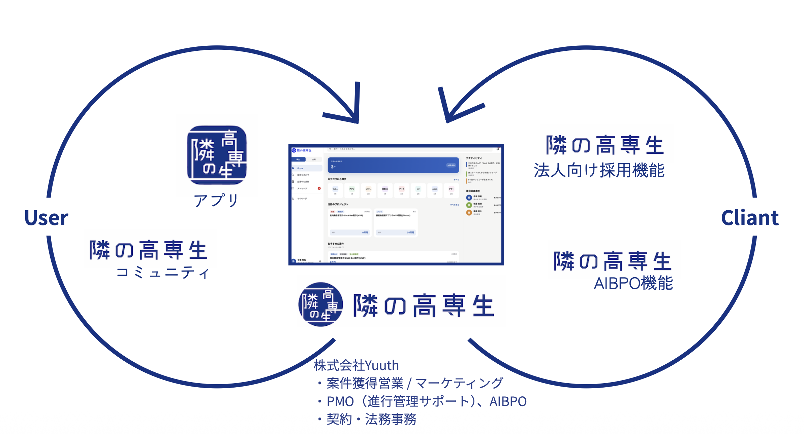
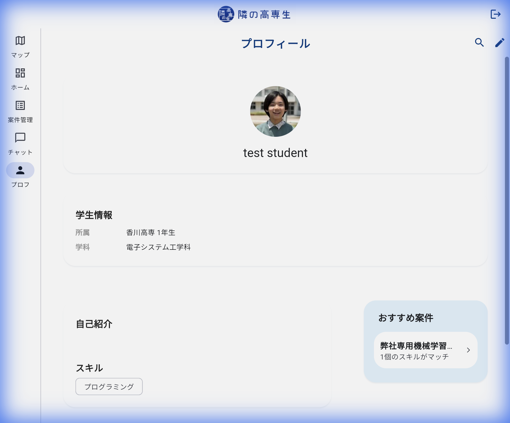

01
応募・登録
から応募するだけ。スキルや興味分野を教えてください。マッチするプロジェクトをご紹介します。
高専生がイノベーションの核になる社会を作る
ソフトウェアへ
隣の高専生
全国5万人の高専生ネットワークが、御社の開発を加速させます
↓
全国5万人の高専生が、あなたの地域の課題解決パートナーに。
技術力と若い発想で、地域に新しい風を吹き込みます。

Problem
エンジニアを採用したいが、半年待っても見つからない
社内DXや業務効率化が後回しになっている
MVPを作りたいが、外注すると数百万かかると言われた
フリーランスに頼んだら、途中で連絡が取れなくなった

高専生による企業からの案件受託
企業コーポレートサイト
HP診断サービス
「やりたいことはあるのに、作る人がいない」
そんな悩みは今日で終わりにしませんか？
隣の高専生は、リソース不足のスタートアップに、まだ市場に出ていない「5万人の若きエンジニア集団」を接続します。
全国58校71学科5万人以上の多彩な高専生エンジニアを、
あなたの開発リソースとして提供します。

PM＋エンジニア複数名のチームでアサインし、進行管理も事務局が担当。途中で連絡が取れなくなるリスクをゼロにします。
認証・決済・ダッシュボード等の共通モジュールを活用し、開発工数を最大50%削減。「まず動くものを見せたい」——その要望に、高専生の突破力でスピード回答します。
SESエンジニア1名の月額相場は80〜120万円。隣の高専生なら案件ベースで30〜200万円。進行管理・品質チェックすべて込みです。
「地域の課題を解決したいけど、人手も予算も足りない」
そんな悩みを抱えていませんか？
隣の高専生は、地域の課題と「若い技術力・行動力を持つ高専生」をマッチング。
プロジェクトを通じて、地域に新しい価値を生み出します。
高専生が地域に入り込み、現場で課題を発見・解決
技術力×若い発想で、従来にないアプローチを実現
全国58高専のネットワークで最適な人材をマッチング
「技術を学んでいるけど、実践の場がない」
そんな高専生のために、リアルなプロジェクト経験を提供します。
スタートアップや地域プロジェクトに参加して、
実践スキル・報酬・ポートフォリオを同時に手に入れよう。
実際のプロジェクトで実践経験が積める
報酬を得ながらスキルアップできる
ポートフォリオやガクチカに使える実績
3ステップで簡単に参加できます。
から応募するだけ。スキルや興味分野を教えてください。マッチするプロジェクトをご紹介します。
チームに加わり、実際の開発に参加。先輩メンバーがサポートするので初心者でも安心です。
プロジェクト完了後に報酬をお支払い。成果物はポートフォリオとして活用できます。
隣の高専生の最新の事業紹介資料をご覧いただけます。

香川高等専門学校 詫間キャンパス 電子システム工学科1年
「隣の高専生」代表。岡山県出身の15歳。
ミライノピッチ3部門受賞、なんチャレ2025最優秀賞、Akatsukiプロジェクト採択など、
高専生として積極的に事業開発・技術開発に取り組む。
地域課題解決や次世代エンジニア育成にも注力し、全国の高専生をつなぐネットワークを構築中。
各高専から選りすぐりのエンジニアが、御社のプロジェクトをサポートします。
長岡高専
眞野航介
神山まるごと高専
中本怜祐
香川高専 詫間キャンパス
岡崎春一
香川高専 高松キャンパス
宮武幸人
広島商船高専
坂口拓海
鳥羽商船高専
阪本拓海
大島商船高専
縄田嵐
呉高専
西岡丈
高知高専
片岡勇登
弓削商船高専 (SECOND)
奥河董馬
SNSでつながる
隣の高専生の活動や最新情報をSNSで発信しています。